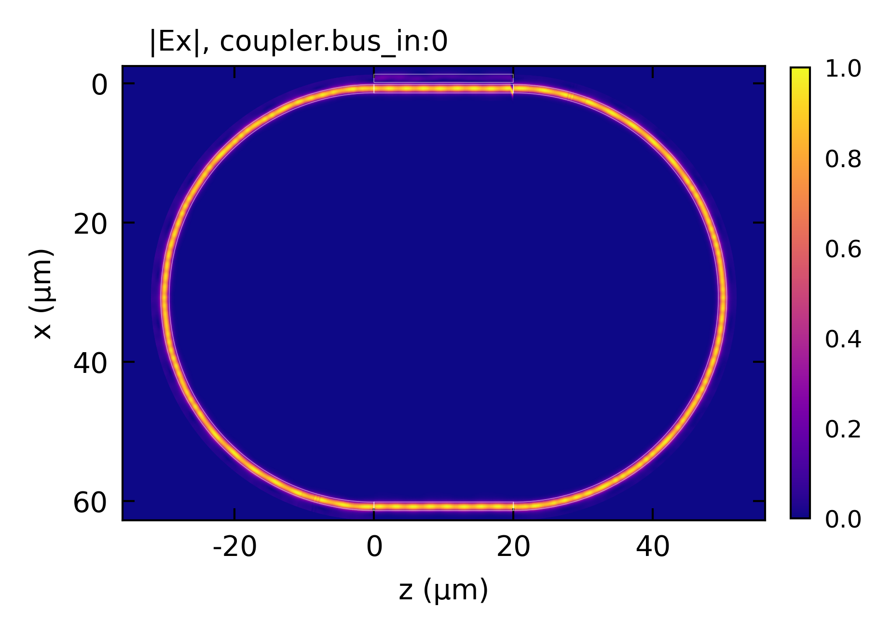
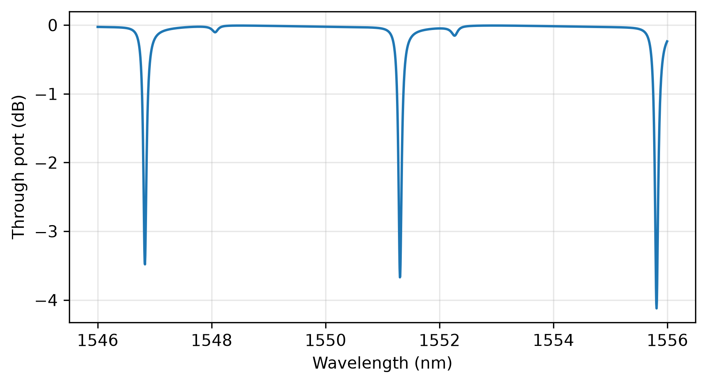

EME: TFLN Ring Resonator
A racetrack ring resonator in x-cut thin-film lithium niobate: the through-port spectrum over a few free spectral ranges, with the free spectral range, extinction and loaded quality factor of each resonance, and the field around the ring on resonance.
The ring is a straight coupler, where the bus and the ring run side by side, two half-circle
bend_sections and a straight back side, closed on itself with connect_ports. Windowed ports
give the coupler’s bus and ring arms their own ports, so the ring can be closed while the bus stays
open. check_layout() confirms the loop closes before anything is solved.
The crystal is fixed on the chip, so along each bend the guide sees it turn: the extraordinary axis
lies across the guide at the ends of a half circle and along it in the middle. Each bend is sliced
along its heading and every slice is solved in its own frame. The crystal turns in steps from slice
to slice, which costs a little power in each half circle, so the bends are refined more finely than
the default (overlap_variation=0.003).
The spectrum comes from sweep(method='interpolated'): the circuit is refined once, its
cross-sections are solved at a few wavelengths, and the S-matrix at each of the 2000 wavelengths is
rebuilt from them, so the sweep costs a few solves rather than 2000. The resonance wavelengths agree
with the same refined circuit solved directly to better than 0.001 nm. The depth of a resonance is more
sensitive, since near critical coupling it amplifies small differences in the coupling and the
round-trip loss.
The circuit is then refined and solved directly at the middle resonance, with the wavelength set on
both labeled profiles, and plot(view='layout') draws the field of each section where the layout
places it: the light the bus couples in builds up around the ring. Refined at that wavelength, the
circuit’s resonance moves by about 0.02 nm, a quarter of its width, so the ring is close to its peak.
This code example is licensed under the BSD 3-Clause License.
import sys
import numpy as np
import emodeconnection as emc
from emodeconnection import MaterialSpec, Port, Bounds
from matplotlib import pyplot as plt
## Set simulation parameters
wavelength = 1550 # [nm] center wavelength
dx, dy = 50, 50 # [nm] resolution
h_film = 600 # [nm] lithium niobate film thickness
etch = 400 # [nm] ridge etch depth
w_core = 1200 # [nm] ridge width
h_box = 1000 # [nm] buried oxide
window_height = 2600 # [nm]
gap = 300 # [nm] bus to ring gap
radius = 30e3 # [nm] bend radius
coupler_length = 20e3 # [nm] straight coupling length
num_modes = 4 # [-]
## The ring is a racetrack: a straight coupler where the bus and the ring
## run side by side, two half-circle bends and a straight back side. The
## x-cut crystal stays fixed on the chip, so along each bend the guide sees
## it turn, and every slice of a bend is solved in its own frame.
em = emc.EMode(emode_cmd=sys.argv[1:], simulation_name='tfln_ring')
x_cut = MaterialSpec(material='LN_MgO', theta=np.pi / 2)
em.settings(
wavelength=wavelength, x_resolution=dx, y_resolution=dy,
window_width=4000, window_height=window_height,
num_modes=num_modes, boundary_condition='00',
background_material='Air')
em.shape(name='BOX', material='SiO2', height=h_box)
em.shape(name='core', material=x_cut, height=h_film, etch_depth=etch, mask=w_core)
em.label_profile(name='ring')
## The coupler's cross-section holds both guides, each centered in its own
## half of the window
d = (gap + w_core) / 2 # [nm] each guide's distance from the center
em.settings(window_width=4 * d + 2000, num_modes=2 * num_modes)
em.shape(name='core', mask=[w_core, w_core], mask_offset=[-d, d])
em.label_profile(name='pair')
## A window on each side of the coupler gives the bus and the ring their own
## ports, so the ring can be closed while the bus stays open
window = lambda x: Bounds(window_width=2 * d, window_height=window_height, offset=(x, 0.0))
em.straight_section(
name='coupler', profile='pair', length=coupler_length,
ports=[Port(name='bus_in', side='left', window=window(-d)),
Port(name='ring_in', side='left', window=window(d)),
Port(name='bus_out', side='right', window=window(-d)),
Port(name='ring_out', side='right', window=window(d))])
## The bends are refined more finely than the default: the crystal turns in
## steps from slice to slice, and the default slicing loses about 1.6 % of
## the power in each half circle to that staircase
bend_settings = {'overlap_variation': 0.003}
em.bend_section(name='bend_1', profile='ring', radius=radius,
sweep_angle=np.pi, settings=bend_settings)
em.straight_section(name='back', profile='ring', length=coupler_length)
em.bend_section(name='bend_2', profile='ring', radius=radius,
sweep_angle=np.pi, settings=bend_settings)
em.connect_ports(pairs=[('coupler.ring_out', 'bend_1.left'),
('bend_1.right', 'back.left'),
('back.right', 'bend_2.left'),
('bend_2.right', 'coupler.ring_in')])
## The loop has to close on itself before anything is solved
report = em.check_layout()
distance, angle = report.max_closure()
print(f'the loop closes to {distance:.1e} nm and {angle:.1e} rad')
em.EME()
## The through-port spectrum over a few free spectral ranges. The circuit is
## refined once, its cross-sections are solved at a few wavelengths, and the
## S-matrix at every wavelength below is rebuilt from them.
wavelengths = np.arange(1546.0, 1556.0, 0.005) # [nm]
data = em.sweep(key='wavelength', values=wavelengths, result='S_matrix',
method='interpolated', num_nodes=6,
wavelength_range=(wavelengths[0], wavelengths[-1]))
T = np.array([np.abs(S.block('coupler.bus_out', 'coupler.bus_in')[0, 0]) ** 2
for S in data['S_matrix']])
## The resonances, their spacing, depth and loaded quality factor
dips = np.where((T[1:-1] < T[:-2]) & (T[1:-1] < T[2:]) & (T[1:-1] < 0.9))[0] + 1
fsr = np.mean(np.diff(wavelengths[dips]))
print(f'free spectral range: {fsr:.2f} nm')
for k in dips:
half = (1 + T[k]) / 2
lo, hi = k, k
while lo > 0 and T[lo] < half:
lo -= 1
while hi < len(T) - 1 and T[hi] < half:
hi += 1
width = wavelengths[hi] - wavelengths[lo]
print(f'resonance at {wavelengths[k]:.3f} nm: extinction {-10 * np.log10(T[k]):.1f} dB, '
f'loaded Q {wavelengths[k] / width:.0f}')
## The field around the ring on its middle resonance, solved there directly
## and drawn where the layout places each section. The sections are built on
## the labeled profiles, so the wavelength is set on each of them.
resonance = wavelengths[dips[len(dips) // 2]]
for name in ('ring', 'pair'):
em.settings(profile=name, wavelength=resonance)
em.EME()
em.plot(component='Ex', plot_function='abs', plane='z-x', view='layout',
file_name='tfln_ring_field', file_type='png')
em.close()
plt.figure(figsize=(7, 3.5))
plt.plot(wavelengths, 10 * np.log10(T))
plt.xlabel('Wavelength (nm)')
plt.ylabel('Through port (dB)')
plt.grid(True, alpha=0.3)
plt.savefig('tfln_ring_spectrum.png', dpi=300, bbox_inches='tight')
Console output:
EMode3D 1.0.6 - email
Solving S-matrices...
Solving section: coupler... completed in 0.0 sec
Solving section: bend_1... completed in 39.4 sec
Solving section: back... completed in 0.0 sec
Solving section: bend_2... completed in 39.0 sec
completed in 1 min 18.4 sec
Solving S-matrices...
Solving section: coupler... completed in 0.0 sec
Solving section: bend_1... completed in 2.1 sec
Solving section: back... completed in 0.0 sec
Solving section: bend_2... completed in 2.1 sec
completed in 4.2 sec
Solving S-matrices...
Solving section: coupler... completed in 0.0 sec
Solving section: bend_1... completed in 46.2 sec
Solving section: back... completed in 0.0 sec
Solving section: bend_2... completed in 46.2 sec
completed in 1 min 32.4 sec
Exited EMode
the loop closes to 7.5e-12 nm and 0.0e+00 rad
free spectral range: 4.49 nm
resonance at 1546.830 nm: extinction 3.5 dB, loaded Q 17187
resonance at 1551.305 nm: extinction 3.7 dB, loaded Q 17237
resonance at 1555.810 nm: extinction 4.1 dB, loaded Q 16377
Figures:

